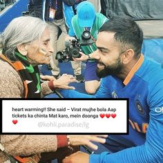
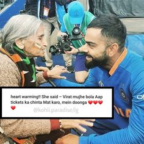

Inspiring stories have the power to lift our spirits, motivate us, and remind us of the potential for greatness
within ourselves. As a nonprofit serving youth through vocational training and job placement, we have some
incredible stories of growth and success to share! The list below contains the true accounts of young people
who’ve overcome incredible odds to rewrite their stories and change their circumstances. We hope our short list
of motivational stories will encourage and inspire you!
 
